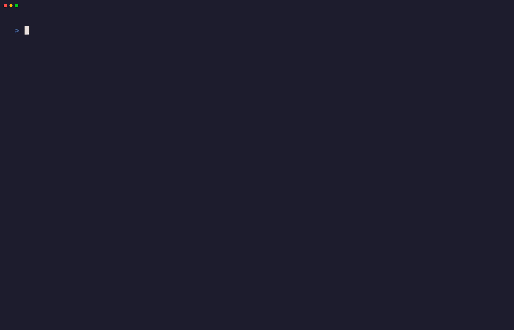
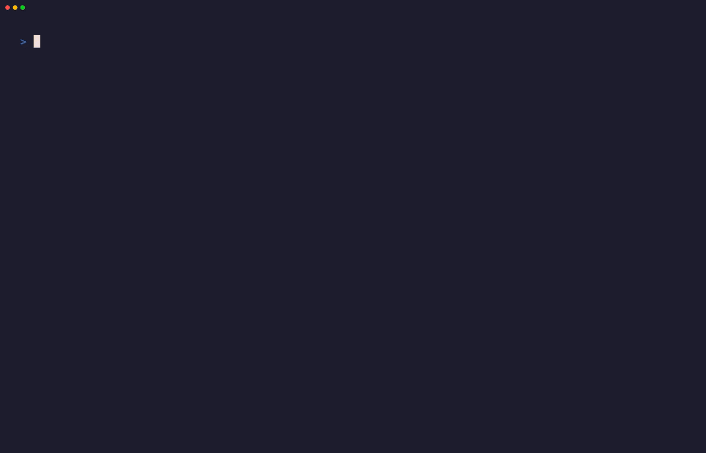
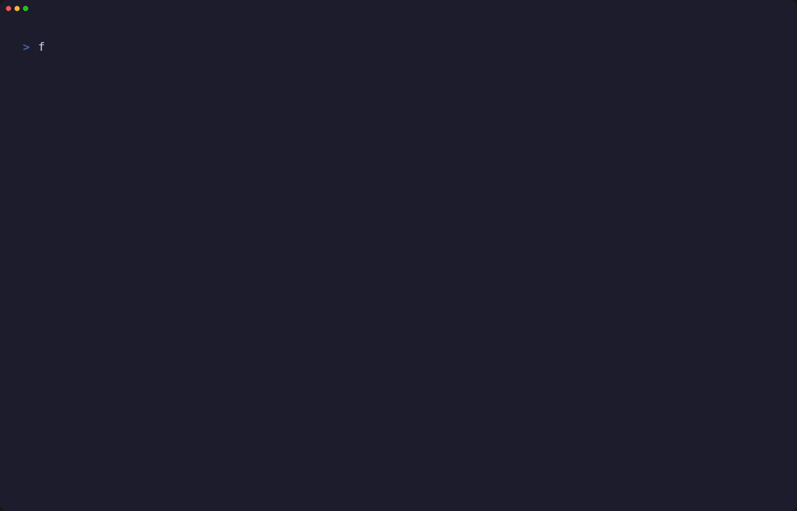

01
Fountain, Rendered
Write plain text in terminal with instant live Fountain screenplay syntax highlighting. Jump across scene headings, characters, and dialogue without leaving your home row keys.


FOUNT / TERMINAL SCREENPLAY EDITOR
A minimal, distraction-free terminal screenplay editor and Fountain editor built for writers who live in the terminal.
UNDER THE SURFACE
Write plain text in terminal with instant live Fountain screenplay syntax highlighting. Jump across scene headings, characters, and dialogue without leaving your home row keys.
Visualize script structure with interactive Index Cards and hierarchical Scene Tree navigation. Reorganize scenes instantly directly within the terminal.
Deep analytical inspection of your screenplay directly in the terminal—monitor dialogue vs. action ratios, scene timing, and character co-occurrence charts.

Set timed writing sprints with real-time words-per-minute (WPM) speed calculation and automatic session snapshots to keep you in flow state.
Global text search and replace panel designed for high-velocity keyboard editing. Search character names, dialogue, and markers across your entire manuscript.

Choose from crisp terminal color themes designed to match your command line setup, from classic matrix greens and e-ink light modes to dark contrast themes.

DOCUMENTATION
Installation, Fountain markup, commands, shortcuts, exports, themes, snapshots, and troubleshooting.
Open Fount Documentation